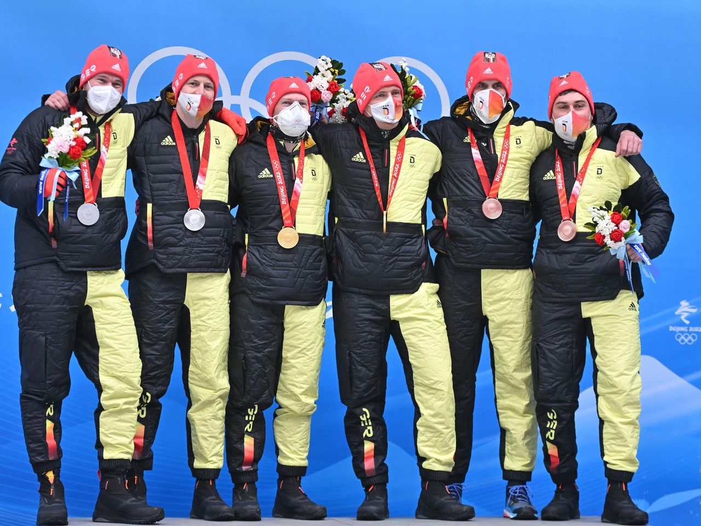

Drei Deutsche Teams holen im Bob fahren Gold,Silber und Bornze

Francesco Friedrich hat Bob-Geschichte geschrieben und als erster Pilot zum zweiten Mal olympisches Doppel-Gold gewonnen. Nach seinem Sieg im Zweierbob triumphierte der 31-Jährige bei den Winterspielen von Peking am Sonntag auch im großen Schlitten und wiederholte damit seine zwei Goldmedaillen von Pyeongchang vor vier Jahren. Der Berchtesgadener Johannes Lochner fuhr im Sliding Centre Yanqing auf Platz zwei, Christoph Hafer vom BC Bad Feilnbach wurde hinter dem Kanadier Justin Kripps Vierter.
 Zur Startseite
Zur Startseite